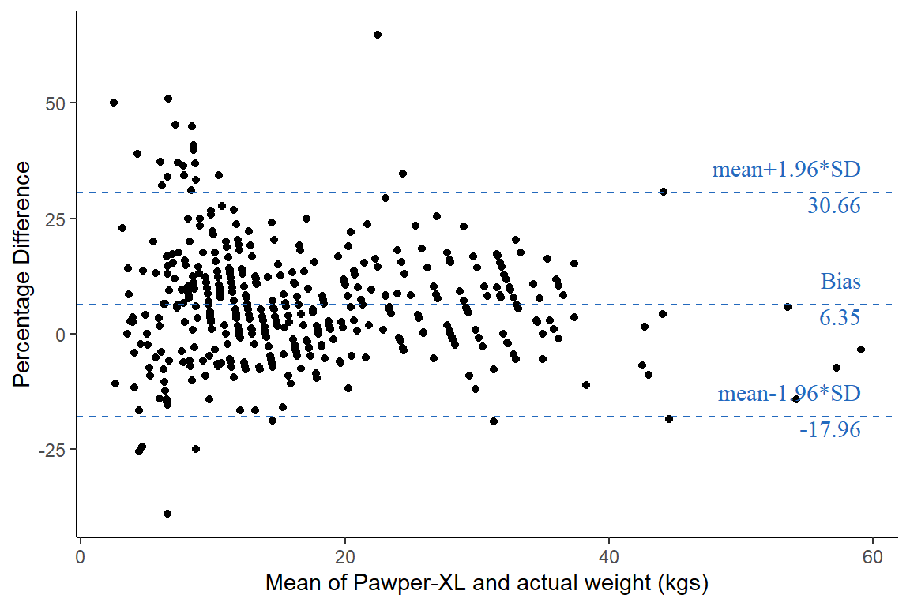

Code
df_poap <-
readxl::read_xlsx("C:/Dataset/pawper.xlsx") %>%
mutate(
weight = parse_number(weight),
id = row_number()) %>%
filter(id != 343) %>%
select(-id)Correlation quantifies the degree to which two variables are related. However, a high correlation does not automatically imply good agreement between the two methods. The correlation coefficient and regression technique are sometimes inadequate and can be misleading when assessing agreement because they evaluate only the linear association of two sets of observations. The r measures the strength of a relation between two variables, not their agreement. Similarly, r2, named the coefficient of determination, only tells us the proportion of variance the two variables have in common. Finally, the significance test may show that the two methods are related, but it is evident that two methods designed to measure the same variable are related.
A Bland-Altman analysis, also known as a Bland-Altman plot or Tukey mean-difference plot compares two different measurement techniques or instruments. It’s commonly used in analytical chemistry and biomedicine to assess the agreement between two assays or measurement methods.
Key Components: X-Axis: Displays the average of the measurements from the two methods.
Y-Axis: Displays the difference between the measurements from the two methods.
Mean Difference (Bias): A horizontal line representing the average difference between the two methods.
Limits of Agreement: Lines representing the upper and lower limits of the differences, typically calculated as the mean difference ± 1.96 times the standard deviation of the differences.
Interpretation: Bias: Indicates if there is a systematic difference between the two methods.
Limits of Agreement: Provides an estimate of the range in which 95% of the differences between the two methods fall.
This analysis helps identify any systematic bias between the methods and assesses the typical range of agreement. It’s beneficial for determining if two measurement techniques can be used interchangeably.
df_poap <-
readxl::read_xlsx("C:/Dataset/pawper.xlsx") %>%
mutate(
weight = parse_number(weight),
id = row_number()) %>%
filter(id != 343) %>%
select(-id)Exploration
df_poap %>%
DataExplorer::plot_histogram(
ggtheme = theme_bw(),
geom_histogram_args = list(
fill = "steelblue",
color = "blue",
bins = 12)) df_poap %>%
ggplot(aes(x = weight, y = pxl_wgt))+
geom_point()+
labs(x = "Actual weight (kgs)", y = "Pawper-XL weight (kgs)")+
theme_bw()df_temp <-
df_poap %>%
select(pxl_wgt, weight) %>%
drop_na() %>%
mutate(
means = (pxl_wgt + weight)/2,
diffs = (pxl_wgt - weight),
bias = mean(diffs),
sd_diffs = sd(diffs),
upper_loa = bias + 1.96 * sd_diffs,
lower_loa = bias - 1.96 * sd_diffs)
ula = mean(df_temp$upper_loa)
lla = mean(df_temp$lower_loa)
mn = mean(df_temp$bias)
xx = max(df_temp$means)
df_temp %>%
ggplot(aes(x = means, y = diffs)) +
geom_point()+
geom_hline(
aes(yintercept = upper_loa),
linetype = 2, color = "#2369BD")+
geom_hline(aes(yintercept = lower_loa),
linetype = 2, color = "#2369BD") +
geom_hline(aes(yintercept = bias),
linetype = 2, color = "#2369BD") +
annotate(
geom = 'text',
label = 'mean+1.96*SD',
x = xx, y = ula, hjust = 1, vjust = -1,
color = "#2369BD", size = 4, family = "serif")+
annotate(
geom = 'text',
label = str_glue({round(ula, 2)}),
x = xx, y = ula, hjust = 1, vjust = 1.2,
color = "#2369BD", size = 4, family = "serif")+
annotate(
geom = 'text',
label = 'mean-1.96*SD',
x = xx, y = lla, hjust = 1, vjust = -1,
color = "#2369BD", size = 4, family = "serif")+
annotate(
geom = 'text',
label = str_glue({round(lla, 2)}),
x = xx, y = lla, hjust = 1, vjust = 1.2,
color = "#2369BD", size = 4, family = "serif")+
annotate(
geom = 'text',
label = 'Bias',
x = xx, y = mn, hjust = 1, vjust = -1,
color = "#2369BD", size = 4, family = "serif")+
annotate(
geom = 'text',
label = str_glue({round(mn, 2)}),
x = xx, y = mn, hjust = 1, vjust = 1.2,
color = "#2369BD", size = 4, family = "serif")+
labs(
x = "Mean of Pawper-XL and actual weight (kgs)",
y = "Difference")+
theme_classic()df_temp <-
df_poap %>%
select(pxl_wgt, weight) %>%
drop_na() %>%
mutate(
means = (pxl_wgt + weight)/2,
diffs = (pxl_wgt - weight)/weight*100,
bias = mean(diffs),
sd_diffs = sd(diffs),
upper_loa = bias + 1.96 * sd_diffs,
lower_loa = bias - 1.96 * sd_diffs)
ula = mean(df_temp$upper_loa)
lla = mean(df_temp$lower_loa)
mn = mean(df_temp$bias)
xx = max(df_temp$means)
df_temp %>%
ggplot(aes(x = means, y = diffs)) +
geom_point()+
geom_hline(
aes(yintercept = upper_loa),
linetype = 2, color = "#2369BD")+
geom_hline(aes(yintercept = lower_loa),
linetype = 2, color = "#2369BD") +
geom_hline(aes(yintercept = bias),
linetype = 2, color = "#2369BD") +
annotate(
geom = 'text',
label = 'mean+1.96*SD',
x = xx, y = ula, hjust = 1, vjust = -1,
color = "#2369BD", size = 4, family = "serif")+
annotate(
geom = 'text',
label = str_glue({round(ula, 2)}),
x = xx, y = ula, hjust = 1, vjust = 1.2,
color = "#2369BD", size = 4, family = "serif")+
annotate(
geom = 'text',
label = 'mean-1.96*SD',
x = xx, y = lla, hjust = 1, vjust = -1,
color = "#2369BD", size = 4, family = "serif")+
annotate(
geom = 'text',
label = str_glue({round(lla, 2)}),
x = xx, y = lla, hjust = 1, vjust = 1.2,
color = "#2369BD", size = 4, family = "serif")+
annotate(
geom = 'text',
label = 'Bias',
x = xx, y = mn, hjust = 1, vjust = -1,
color = "#2369BD", size = 4, family = "serif")+
annotate(
geom = 'text',
label = str_glue({round(mn, 2)}),
x = xx, y = mn, hjust = 1, vjust = 1.2,
color = "#2369BD", size = 4, family = "serif")+
labs(
x = "Mean of Pawper-XL and actual weight (kgs)",
y = "Percentage Difference")+
theme_classic()
library(magrittr)
Attaching package: 'magrittr'The following object is masked from 'package:purrr':
set_namesThe following object is masked from 'package:tidyr':
extractdf_poap %$%
BlandAltmanLeh::bland.altman.stats(
group1 = weight, group2 = pxl_wgt)$means
[1] 23.075 16.375 12.725 18.275 6.950 11.600 10.475 11.900 8.550 8.200
[11] 3.175 8.900 8.625 16.850 11.255 13.250 12.000 34.725 9.550 9.875
[21] 31.800 17.150 17.850 19.875 9.775 14.000 25.350 8.500 37.350 28.175
[31] 34.575 14.725 28.975 15.400 14.600 5.900 14.200 14.865 8.100 31.550
[41] 29.350 8.105 10.400 23.405 8.150 8.465 5.060 11.975 7.000 11.000
[51] 7.950 32.950 23.100 20.425 26.700 20.475 18.850 31.725 17.950 5.650
[61] 11.350 3.500 27.750 6.125 7.750 6.500 26.900 18.000 7.650 17.800
[71] 30.425 13.800 7.850 12.100 29.400 16.285 35.000 16.400 16.400 6.400
[81] 15.900 6.050 16.650 9.600 9.875 59.050 14.425 18.750 11.000 27.750
[91] 8.550 17.100 8.850 11.900 14.800 9.050 10.500 31.500 11.750 35.000
[101] 35.000 9.600 20.700 6.700 18.250 29.200 5.500 20.000 36.200 7.750
[111] 7.300 29.250 14.500 28.100 28.000 24.250 36.000 27.900 31.500 33.300
[121] 8.150 6.700 12.450 21.250 25.500 9.800 6.150 24.000 11.950 11.750
[131] 33.000 31.250 25.500 22.000 32.075 9.675 26.725 17.425 44.075 21.475
[141] 11.800 10.175 14.050 10.600 14.400 29.875 17.275 30.125 17.925 17.725
[151] 4.050 8.300 13.000 11.625 8.750 11.050 37.350 16.225 13.325 10.400
[161] 20.200 36.025 13.550 6.550 12.000 8.175 13.650 8.575 27.975 25.575
[171] 12.625 19.900 11.425 13.000 19.500 8.375 30.000 22.900 20.200 21.350
[181] 20.275 18.425 19.125 14.000 26.900 21.575 44.525 10.500 11.325 13.900
[191] 20.925 11.150 18.225 8.600 19.125 6.515 14.000 14.875 9.275 19.900
[201] 11.775 10.900 35.825 8.575 9.550 21.000 14.175 21.800 11.575 11.575
[211] 8.450 11.450 9.825 6.600 10.650 19.925 14.475 32.925 24.375 6.425
[221] 19.750 9.850 5.950 9.600 9.450 10.525 12.875 28.350 13.975 13.975
[231] 31.275 9.500 22.325 10.375 14.050 9.740 33.125 17.950 5.000 14.625
[241] 10.180 12.400 7.100 4.400 24.400 32.450 10.465 11.275 29.700 15.325
[251] 12.600 14.450 28.725 11.700 31.725 36.525 3.565 13.200 26.950 14.350
[261] 30.800 7.915 12.750 10.700 16.325 25.975 30.525 32.525 7.800 15.700
[271] 12.050 16.625 15.550 13.900 3.930 20.675 32.775 17.900 18.900 14.475
[281] 16.100 10.025 10.575 9.250 6.650 7.650 5.950 11.950 11.125 17.200
[291] 11.050 24.000 12.025 16.925 9.950 12.675 15.375 22.475 34.250 16.150
[301] 8.750 12.525 53.500 20.750 8.950 44.125 7.175 42.675 4.085 15.100
[311] 24.450 27.925 35.350 9.840 7.285 12.950 16.200 15.350 8.250 9.450
[321] 17.125 9.000 12.925 57.200 25.825 54.150 13.975 4.450 6.250 6.550
[331] 6.950 24.100 31.500 18.500 10.000 27.000 15.500 35.500 27.750 7.400
[341] 32.300 11.300 13.150 16.500 6.600 8.500 13.750 14.650 17.600 20.250
[351] 20.750 8.650 2.500 36.200 5.200 12.800 7.750 11.400 19.650 8.750
[361] 18.350 38.250 6.550 32.350 10.350 12.750 8.450 10.550 5.250 24.400
[371] 6.500 11.350 12.400 25.950 6.350 4.300 6.300 12.250 23.050 13.300
[381] 24.150 29.900 9.050 14.550 8.250 19.600 8.250 9.750 17.550 10.250
[391] 17.250 7.900 24.250 3.750 7.650 31.850 32.200 16.650 13.950 4.700
[401] 5.650 14.950 23.350 15.800 10.600 24.200 15.750 9.450 32.750 43.000
[411] 26.250 4.550 3.950 16.550 3.650 2.650 14.950 4.900 23.500 8.750
[421] 11.900 12.250 10.350 9.700 12.200 9.800 8.550 23.350 15.800 10.600
[431] 24.200 15.750 9.450 32.750 42.500 13.650 13.225 21.700 4.650 16.175
[441] 10.025 24.500 16.000 12.500 12.500 13.500 11.500 20.500 25.000 32.000
[451] 14.500 34.500 14.500 11.000 13.000 7.350 22.500 14.000 29.000 20.500
[461] 6.350
$diffs
[1] -1.85 -1.25 -2.55 -1.45 -1.10 -0.80 -1.05 -2.20 -0.90 -0.60
[11] -0.65 -1.20 0.25 -0.30 -1.49 -1.50 -2.00 -2.55 -0.90 -2.25
[21] -2.40 0.30 -0.30 -0.25 -0.45 0.00 -5.30 -1.00 -1.30 0.35
[31] -0.85 -0.55 -6.05 -0.20 -0.80 -0.20 0.40 -0.27 -1.80 -4.90
[41] -1.30 -0.79 -1.20 -1.19 -0.70 -0.07 0.12 -0.05 -1.00 0.00
[51] -1.10 -6.10 -1.80 -1.15 -2.60 -4.05 -0.30 -4.55 -0.10 0.30
[61] 0.70 0.00 -0.50 0.25 0.50 1.00 -2.20 0.00 0.30 1.60
[71] 0.85 -0.40 -2.30 2.20 2.80 0.57 2.00 0.80 0.80 -0.40
[81] 1.80 -1.90 1.30 -0.80 -0.25 2.10 0.85 -0.50 -2.00 -4.50
[91] -2.90 -3.80 -0.30 -0.20 -0.40 -1.90 -1.00 -3.00 -2.50 0.00
[101] 0.00 -0.80 -0.60 -0.60 0.50 -1.60 -1.00 -2.00 0.40 0.50
[111] -0.40 -1.50 -1.00 0.20 0.00 -3.50 -4.00 -0.20 -3.00 -5.40
[121] -0.70 0.40 0.90 -1.50 -1.00 -0.40 -1.70 -2.00 -0.10 -0.50
[131] -2.00 2.50 -1.00 -2.00 -3.85 -0.65 1.45 0.85 -1.85 -3.05
[141] -0.40 0.35 0.10 -0.80 0.80 -0.25 0.55 0.25 -0.15 -2.55
[151] 0.50 0.60 -2.00 -2.75 2.50 -1.90 -5.30 0.45 -1.35 -1.20
[161] -1.60 -3.95 1.10 -1.90 -2.00 -0.65 -0.70 -2.85 -4.05 -0.85
[171] -0.75 -2.20 0.85 0.00 -3.00 -2.25 -4.00 -0.20 -1.60 -1.30
[181] 2.55 -1.15 0.25 0.00 -2.20 1.15 9.05 -1.00 0.65 -0.20
[191] -0.15 -1.70 0.45 -0.80 0.25 1.03 0.00 -0.25 0.55 -2.20
[201] -0.45 -0.20 -0.35 -0.85 -0.90 -2.00 -1.65 -0.40 1.15 1.15
[211] -3.10 -1.10 -0.35 -0.80 0.70 -2.15 0.95 1.85 0.75 0.85
[221] -0.50 -0.30 0.90 -0.80 -1.10 -0.95 -2.25 0.70 -0.05 -0.05
[231] 6.55 -1.00 -3.35 0.75 0.10 0.48 -1.75 -0.10 0.00 -0.75
[241] -1.64 -1.20 -0.80 0.80 -7.20 -3.10 -3.07 -1.45 -4.60 2.65
[251] -0.80 -3.10 -2.55 -0.60 -2.55 -2.95 -0.47 2.40 -6.10 0.70
[261] -2.40 -1.17 -0.50 -2.60 0.65 -0.05 -2.95 -2.95 -2.40 -0.60
[271] 0.10 -2.75 -0.90 -0.20 -0.14 -2.65 -2.45 1.80 -0.20 0.95
[281] 0.20 -1.95 -0.85 -1.50 -2.70 -0.70 -0.10 -2.10 0.25 -1.60
[291] -1.90 -4.00 0.05 -2.15 -0.10 -0.65 -1.25 -3.05 -3.50 -1.70
[301] -0.50 -0.95 -3.00 -2.50 -1.10 -11.75 -2.65 -0.65 0.17 -1.80
[311] 0.90 -4.15 -5.30 -2.32 -0.43 -0.10 0.40 0.70 0.50 -1.10
[321] 0.25 -2.00 -0.15 4.40 -4.35 8.30 -0.05 1.30 0.50 1.10
[331] -1.10 0.20 -5.00 1.00 -2.00 -2.00 -1.00 -1.00 -0.50 -1.20
[341] 0.60 -1.40 0.30 -1.00 3.20 -1.00 -0.50 -2.70 -0.80 -3.50
[351] -2.50 -2.70 -1.00 -3.60 0.40 -0.40 -0.50 -1.20 1.30 -2.50
[361] -1.30 4.50 -0.90 0.70 -1.30 -0.50 0.90 -0.90 0.50 0.80
[371] -1.00 -1.30 0.80 -0.10 0.70 -1.40 -0.40 -1.50 -5.90 -1.40
[381] 0.30 3.80 -1.90 1.10 -1.50 1.20 -1.50 1.50 -0.90 -1.50
[391] 0.50 -0.20 -3.50 -0.10 -0.70 -4.30 -3.60 -0.70 -0.10 -0.60
[401] -0.70 -2.10 -1.30 -0.40 -0.80 0.40 1.50 0.90 1.50 4.00
[411] -3.50 0.10 -0.10 -2.90 -0.30 0.30 -2.10 -0.20 -1.00 -2.50
[421] -2.20 -1.50 0.70 -0.60 -1.60 -0.40 -2.90 -1.30 -0.40 -0.80
[431] 0.40 1.50 0.90 1.50 3.00 -0.70 -1.55 -4.60 1.30 -1.65
[441] -1.95 -3.00 -2.00 -1.00 1.00 1.00 -1.00 1.00 -2.00 0.00
[451] 1.00 -1.00 3.00 0.00 0.00 -2.30 -11.00 0.00 -2.00 1.00
[461] 0.70
$groups
group1 group2
1 22.15 24.0
2 15.75 17.0
3 11.45 14.0
4 17.55 19.0
5 6.40 7.5
6 11.20 12.0
7 9.95 11.0
8 10.80 13.0
9 8.10 9.0
10 7.90 8.5
11 2.85 3.5
12 8.30 9.5
13 8.75 8.5
14 16.70 17.0
15 10.51 12.0
16 12.50 14.0
17 11.00 13.0
18 33.45 36.0
19 9.10 10.0
20 8.75 11.0
21 30.60 33.0
22 17.30 17.0
23 17.70 18.0
24 19.75 20.0
25 9.55 10.0
26 14.00 14.0
27 22.70 28.0
28 8.00 9.0
29 36.70 38.0
30 28.35 28.0
31 34.15 35.0
32 14.45 15.0
33 25.95 32.0
34 15.30 15.5
35 14.20 15.0
36 5.80 6.0
37 14.40 14.0
38 14.73 15.0
39 7.20 9.0
40 29.10 34.0
41 28.70 30.0
42 7.71 8.5
43 9.80 11.0
44 22.81 24.0
45 7.80 8.5
46 8.43 8.5
47 5.12 5.0
48 11.95 12.0
49 6.50 7.5
50 11.00 11.0
51 7.40 8.5
52 29.90 36.0
53 22.20 24.0
54 19.85 21.0
55 25.40 28.0
56 18.45 22.5
57 18.70 19.0
58 29.45 34.0
59 17.90 18.0
60 5.80 5.5
61 11.70 11.0
62 3.50 3.5
63 27.50 28.0
64 6.25 6.0
65 8.00 7.5
66 7.00 6.0
67 25.80 28.0
68 18.00 18.0
69 7.80 7.5
70 18.60 17.0
71 30.85 30.0
72 13.60 14.0
73 6.70 9.0
74 13.20 11.0
75 30.80 28.0
76 16.57 16.0
77 36.00 34.0
78 16.80 16.0
79 16.80 16.0
80 6.20 6.6
81 16.80 15.0
82 5.10 7.0
83 17.30 16.0
84 9.20 10.0
85 9.75 10.0
86 60.10 58.0
87 14.85 14.0
88 18.50 19.0
89 10.00 12.0
90 25.50 30.0
91 7.10 10.0
92 15.20 19.0
93 8.70 9.0
94 11.80 12.0
95 14.60 15.0
96 8.10 10.0
97 10.00 11.0
98 30.00 33.0
99 10.50 13.0
100 35.00 35.0
101 35.00 35.0
102 9.20 10.0
103 20.40 21.0
104 6.40 7.0
105 18.50 18.0
106 28.40 30.0
107 5.00 6.0
108 19.00 21.0
109 36.40 36.0
110 8.00 7.5
111 7.10 7.5
112 28.50 30.0
113 14.00 15.0
114 28.20 28.0
115 28.00 28.0
116 22.50 26.0
117 34.00 38.0
118 27.80 28.0
119 30.00 33.0
120 30.60 36.0
121 7.80 8.5
122 6.90 6.5
123 12.90 12.0
124 20.50 22.0
125 25.00 26.0
126 9.60 10.0
127 5.30 7.0
128 23.00 25.0
129 11.90 12.0
130 11.50 12.0
131 32.00 34.0
132 32.50 30.0
133 25.00 26.0
134 21.00 23.0
135 30.15 34.0
136 9.35 10.0
137 27.45 26.0
138 17.85 17.0
139 43.15 45.0
140 19.95 23.0
141 11.60 12.0
142 10.35 10.0
143 14.10 14.0
144 10.20 11.0
145 14.80 14.0
146 29.75 30.0
147 17.55 17.0
148 30.25 30.0
149 17.85 18.0
150 16.45 19.0
151 4.30 3.8
152 8.60 8.0
153 12.00 14.0
154 10.25 13.0
155 10.00 7.5
156 10.10 12.0
157 34.70 40.0
158 16.45 16.0
159 12.65 14.0
160 9.80 11.0
161 19.40 21.0
162 34.05 38.0
163 14.10 13.0
164 5.60 7.5
165 11.00 13.0
166 7.85 8.5
167 13.30 14.0
168 7.15 10.0
169 25.95 30.0
170 25.15 26.0
171 12.25 13.0
172 18.80 21.0
173 11.85 11.0
174 13.00 13.0
175 18.00 21.0
176 7.25 9.5
177 28.00 32.0
178 22.80 23.0
179 19.40 21.0
180 20.70 22.0
181 21.55 19.0
182 17.85 19.0
183 19.25 19.0
184 14.00 14.0
185 25.80 28.0
186 22.15 21.0
187 49.05 40.0
188 10.00 11.0
189 11.65 11.0
190 13.80 14.0
191 20.85 21.0
192 10.30 12.0
193 18.45 18.0
194 8.20 9.0
195 19.25 19.0
196 7.03 6.0
197 14.00 14.0
198 14.75 15.0
199 9.55 9.0
200 18.80 21.0
201 11.55 12.0
202 10.80 11.0
203 35.65 36.0
204 8.15 9.0
205 9.10 10.0
206 20.00 22.0
207 13.35 15.0
208 21.60 22.0
209 12.15 11.0
210 12.15 11.0
211 6.90 10.0
212 10.90 12.0
213 9.65 10.0
214 6.20 7.0
215 11.00 10.3
216 18.85 21.0
217 14.95 14.0
218 33.85 32.0
219 24.75 24.0
220 6.85 6.0
221 19.50 20.0
222 9.70 10.0
223 6.40 5.5
224 9.20 10.0
225 8.90 10.0
226 10.05 11.0
227 11.75 14.0
228 28.70 28.0
229 13.95 14.0
230 13.95 14.0
231 34.55 28.0
232 9.00 10.0
233 20.65 24.0
234 10.75 10.0
235 14.10 14.0
236 9.98 9.5
237 32.25 34.0
238 17.90 18.0
239 5.00 5.0
240 14.25 15.0
241 9.36 11.0
242 11.80 13.0
243 6.70 7.5
244 4.80 4.0
245 20.80 28.0
246 30.90 34.0
247 8.93 12.0
248 10.55 12.0
249 27.40 32.0
250 16.65 14.0
251 12.20 13.0
252 12.90 16.0
253 27.45 30.0
254 11.40 12.0
255 30.45 33.0
256 35.05 38.0
257 3.33 3.8
258 14.40 12.0
259 23.90 30.0
260 14.70 14.0
261 29.60 32.0
262 7.33 8.5
263 12.50 13.0
264 9.40 12.0
265 16.65 16.0
266 25.95 26.0
267 29.05 32.0
268 31.05 34.0
269 6.60 9.0
270 15.40 16.0
271 12.10 12.0
272 15.25 18.0
273 15.10 16.0
274 13.80 14.0
275 3.86 4.0
276 19.35 22.0
277 31.55 34.0
278 18.80 17.0
279 18.80 19.0
280 14.95 14.0
281 16.20 16.0
282 9.05 11.0
283 10.15 11.0
284 8.50 10.0
285 5.30 8.0
286 7.30 8.0
287 5.90 6.0
288 10.90 13.0
289 11.25 11.0
290 16.40 18.0
291 10.10 12.0
292 22.00 26.0
293 12.05 12.0
294 15.85 18.0
295 9.90 10.0
296 12.35 13.0
297 14.75 16.0
298 20.95 24.0
299 32.50 36.0
300 15.30 17.0
301 8.50 9.0
302 12.05 13.0
303 52.00 55.0
304 19.50 22.0
305 8.40 9.5
306 38.25 50.0
307 5.85 8.5
308 42.35 43.0
309 4.17 4.0
310 14.20 16.0
311 24.90 24.0
312 25.85 30.0
313 32.70 38.0
314 8.68 11.0
315 7.07 7.5
316 12.90 13.0
317 16.40 16.0
318 15.70 15.0
319 8.50 8.0
320 8.90 10.0
321 17.25 17.0
322 8.00 10.0
323 12.85 13.0
324 59.40 55.0
325 23.65 28.0
326 58.30 50.0
327 13.95 14.0
328 5.10 3.8
329 6.50 6.0
330 7.10 6.0
331 6.40 7.5
332 24.20 24.0
333 29.00 34.0
334 19.00 18.0
335 9.00 11.0
336 26.00 28.0
337 15.00 16.0
338 35.00 36.0
339 27.50 28.0
340 6.80 8.0
341 32.60 32.0
342 10.60 12.0
343 13.30 13.0
344 16.00 17.0
345 8.20 5.0
346 8.00 9.0
347 13.50 14.0
348 13.30 16.0
349 17.20 18.0
350 18.50 22.0
351 19.50 22.0
352 7.30 10.0
353 2.00 3.0
354 34.40 38.0
355 5.40 5.0
356 12.60 13.0
357 7.50 8.0
358 10.80 12.0
359 20.30 19.0
360 7.50 10.0
361 17.70 19.0
362 40.50 36.0
363 6.10 7.0
364 32.70 32.0
365 9.70 11.0
366 12.50 13.0
367 8.90 8.0
368 10.10 11.0
369 5.50 5.0
370 24.80 24.0
371 6.00 7.0
372 10.70 12.0
373 12.80 12.0
374 25.90 26.0
375 6.70 6.0
376 3.60 5.0
377 6.10 6.5
378 11.50 13.0
379 20.10 26.0
380 12.60 14.0
381 24.30 24.0
382 31.80 28.0
383 8.10 10.0
384 15.10 14.0
385 7.50 9.0
386 20.20 19.0
387 7.50 9.0
388 10.50 9.0
389 17.10 18.0
390 9.50 11.0
391 17.50 17.0
392 7.80 8.0
393 22.50 26.0
394 3.70 3.8
395 7.30 8.0
396 29.70 34.0
397 30.40 34.0
398 16.30 17.0
399 13.90 14.0
400 4.40 5.0
401 5.30 6.0
402 13.90 16.0
403 22.70 24.0
404 15.60 16.0
405 10.20 11.0
406 24.40 24.0
407 16.50 15.0
408 9.90 9.0
409 33.50 32.0
410 45.00 41.0
411 24.50 28.0
412 4.60 4.5
413 3.90 4.0
414 15.10 18.0
415 3.50 3.8
416 2.80 2.5
417 13.90 16.0
418 4.80 5.0
419 23.00 24.0
420 7.50 10.0
421 10.80 13.0
422 11.50 13.0
423 10.70 10.0
424 9.40 10.0
425 11.40 13.0
426 9.60 10.0
427 7.10 10.0
428 22.70 24.0
429 15.60 16.0
430 10.20 11.0
431 24.40 24.0
432 16.50 15.0
433 9.90 9.0
434 33.50 32.0
435 44.00 41.0
436 13.30 14.0
437 12.45 14.0
438 19.40 24.0
439 5.30 4.0
440 15.35 17.0
441 9.05 11.0
442 23.00 26.0
443 15.00 17.0
444 12.00 13.0
445 13.00 12.0
446 14.00 13.0
447 11.00 12.0
448 21.00 20.0
449 24.00 26.0
450 32.00 32.0
451 15.00 14.0
452 34.00 35.0
453 16.00 13.0
454 11.00 11.0
455 13.00 13.0
456 6.20 8.5
457 17.00 28.0
458 14.00 14.0
459 28.00 30.0
460 21.00 20.0
461 6.70 6.0
$based.on
[1] 461
$lower.limit
[1] -4.65569
$mean.diffs
[1] -0.8345553
$upper.limit
[1] 2.986579
$lines
lower.limit mean.diffs upper.limit
-4.6556898 -0.8345553 2.9865791
$CI.lines
lower.limit.ci.lower lower.limit.ci.upper mean.diff.ci.lower
-4.9647468 -4.3466327 -1.0129895
mean.diff.ci.upper upper.limit.ci.lower upper.limit.ci.upper
-0.6561211 2.6775221 3.2956362
$two
[1] 1.96
$critical.diff
[1] 3.821134